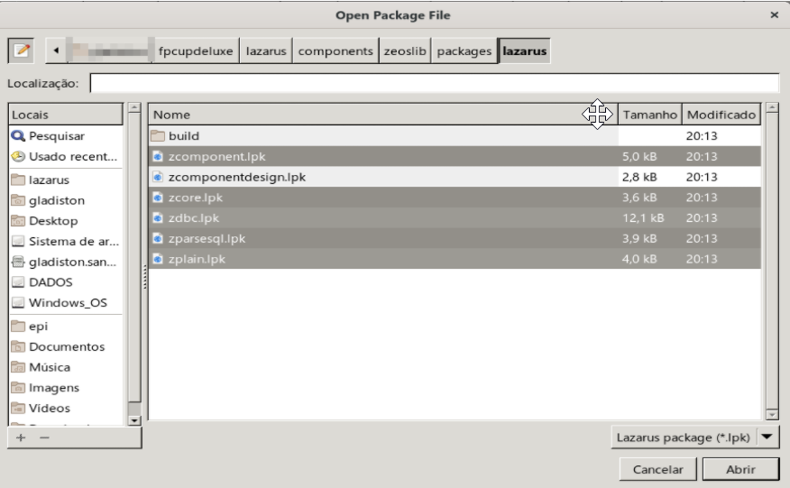
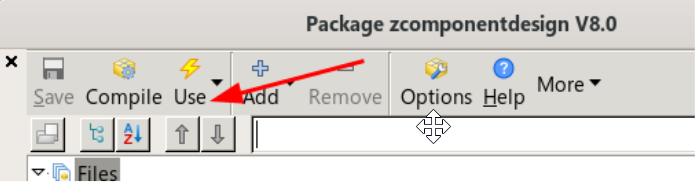
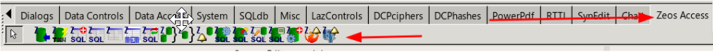
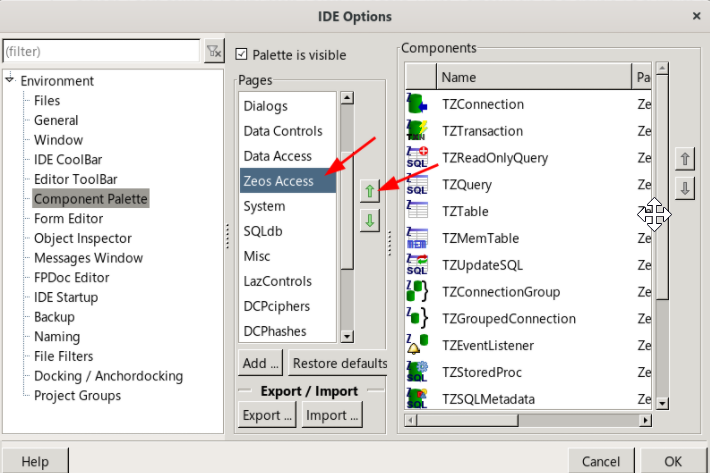

Principal suíte de acesso a banco de dados. Dá para utilizá-lo também no Delphi Comunity Edition.
ZeosLib download | SourceForge.net
IMPORTANTE #1: É altamente recomendável instalar via OPM, siga estas instruções apenas quando deseja experimentar uma versão diferente da que é instalada via OPM.
Para uma instalação manual do zeos via GIT, faça o seguinte:
cd ~/fpcupdeluxe/lazarus/components (ou diretorio onde ficam seus componentes) git clone https://github.com/marsupilami79/zeoslib.git (esse é o zeos8 beta) cd zeoslib git branch -r
Ao ver a listagem acima determine qual é a versão desejada, acaso tenha escolhido 7.2.14-stable então execute:
git switch 7.2.14-stable
Vá no Lazarus->Package->Open Package File(.lpk) e com exceção do pacote zcomponentdesign.lpk, abra todos os demais *.lpk em [lazarus-install]/components/zeoslib/packages/lazarus:

Tendo compilado os os pacotes mencionados agora abra o pacote zcomponentdesign.lpk e depois vá na opção Use->Install:

Depois de Compilar e Instalar, será necessário confirmar a compilação da IDE e reiniciá-la.
Após, basta conferir os componentes em sua paleta:

Como pode ver, a paleta do Zeos fica bem longe do ‘Data Access’ onde estão componentes relacionados a banco de dados, faríamos bem em clicar com o botão direito sobre a paleta, ir em Options e trazer a paleta do Zeos para depois da seção ‘Data Acces’:

Clique em ‘OK’ e estará tudo pronto.